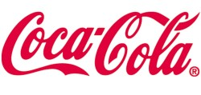
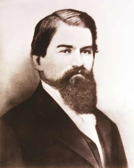
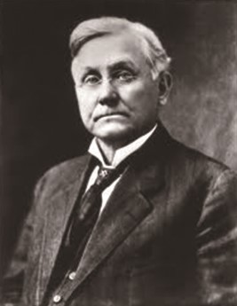
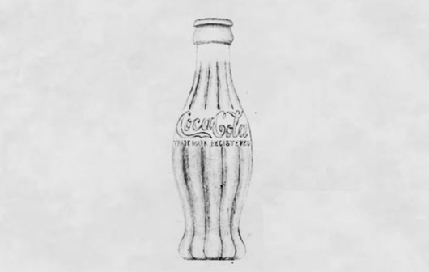
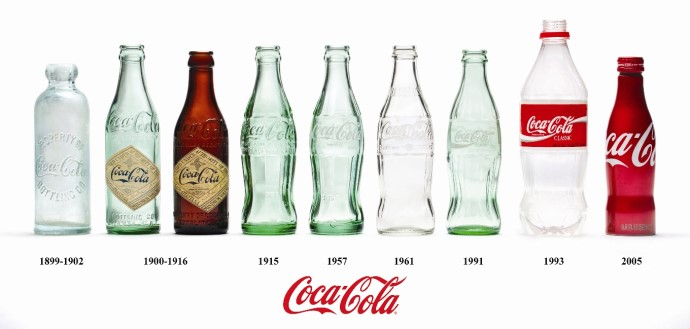

코카-콜라
[Coca-Cola]
목차
- 코카-콜라의 정의 및 기원
- 코카-콜라의 탄생 및 창업자
- 코카-콜라의 역사
- 코카-콜라의 새로운 기술 및 발명

코카콜라 상표 이미지
1. 코카-콜라의 정의 및 기원
코카-콜라(Coca-Cola)는 미국의 탄산음료 브랜드로, 제품인 코카-콜라 음료는 코카(Coca) 나뭇잎과 콜라(Cola) 열매로 만들어졌다. 1886년 약제사였던 존 펨버튼 박사(Dr. John Pemberton)는 코카잎 추출물, 콜라나무 열매 그리고 시럽 등을 혼합하여 두뇌강장제(Brain Tonic)를 개발했다. 존 펨버튼 박사는 미국 조지아(Georgia)주 애틀랜타(Atlanta)에 있는 야콥 약국(Jacob’s Pharmacy)에 이 음료를 납품하기 시작했고, 당시 약국의 경리사원이었던 프랭크 로빈슨(Frank Robinson)은 두 개의 ‘C’자를 매치해 ‘코카-콜라(Coca-Cola)’라고 이름 붙였다. 이후 코카-콜라는 사업가인 아사 캔들러(Asa Candler)가 대중화를 시켰는데, 코카-콜라는 오늘날 미국 문화의 상징이자 탄산음료의 대명사가 되었다.
2. 코카-콜라의 탄생 및 창업자
코카-콜라 개발자인 존 펨버튼은 1831년에 조지아(Georgia)주 녹스빌(Knoxville)에서 태어났다. 그는 정식으로 의학 교육을 받진 않았지만 여러 가지 재료를 혼합해 약품을 만드는 재주가 있었다. 1870년 존 펨버튼은 애틀랜타에 와서 약국을 운영하기 시작했고 각종 조제약으로 명성을 얻었다. 펨버튼 박사는 코카-콜라 시럽을 생산해 소다수 음료수를 개발했다. 이 음료는 야곱 약국 소다수 판매대에 진열되어 한 잔당 5센트로 판매되었다. 존 펨버튼은 광고 전단과 상품 교환권에 약 74달러를 투자했지만, 코카-콜라는 하루 평균 6잔이 판매되었고 첫 해 총 수입은 50달러에 불과했다.
 코카-콜라를 개발한 '존 펨버튼 박사' 코카-콜라를 대중화시킨 '아사 캔들러'
코카-콜라를 대중화시킨 것은 애틀랜타의 사업가인 아사 캔들러(Asa Candler)였다. 존 펨버튼은 생전에 이 음료의 성장 가능성을 제대로 알지 못했다. 그는 1888년에 세상을 떠날 때까지 여러 파트너들에게 사업지분을 쪼개 팔았는데, 그 중 한 사람이 아사 캔들러였다. 탁월한 사업감각을 갖고 있던 아사 캔들러는 1892년에 2천 300달러(당시, 약 122만 원)에 코카-콜라 사업의 소유권을 확보했다. 그는 존 펨버튼의 전 동업자였던 프랭크 로빈슨(Frank Robinson)과 함께 1892년에 ‘코카-콜라 컴퍼니(The Coca-Cola Company, TCCC)’를 설립했다.
3. 코카-콜라의 역사
1)창업 ~ 보틀링 시스텝의 시작(1892~1915)
회사 설립 이후, 광고 및 홍보에 대한 중요성을 간파하고 있던 아사 캔들러는 수천 개의 무료 시음 쿠폰을 발행하고, 코카-콜라 로고가 새겨진 달력, 시계 등 다양한 기념품을 만들어 적극적인 프로모션을 진행했다. 이런 적극적인 프로모션을 통해 코카-콜라의 수요는 애들랜타 지역 밖에서도 지속적으로 올라갔고, 아사 캔틀러는 1893년에 코카-콜라 상표권을 미국 특허청에 등록하여 브랜드를 보호하고자 했다.
2)컨투어병 출시 ~ 환타 인수 전(1915~1960)
코카-콜라가 선풍적인 인기를 끌면서 청량음료 시장의 경쟁은 더욱 치열해졌다. 이 때부터 코카-콜라의 모조품들이 시장에 나오기 시작했다. 미국 각 지역에 있는 보틀러들은 코카-콜라 컴퍼니에 다른 회사의 제품과 확연하게 구별되는 병 디자인을 요구하기 시작했다. 1915년 코카-콜라 컴퍼니는 보틀러를 대상으로 병 디자인을 공모했다. 루트 유리회사(Root Glass Company)의 디자이너로 일하던 알렉산더 사무엘슨(Alexander Samuelson)과 얼 딘(Earl Dean)이 공동으로 디자인한 안이 채택되었는데, 그들은 수십 번의 디자인 수정 끝에 어둠 속에서도 쉽게 구분할 수 있는 코카-콜라 ‘컨투어병(Contour, ‘윤곽’을 뜻함)’을 개발했다고 한다.
초기 컨투어병의 디자인 스케치(1915)
3)환타 인수 이후(1960~2013)
1960년대 코카-콜라 컴퍼니는 인수합병을 꾸준히 진행하며 글로벌 기업으로 성장했다. 1960년에는 청량음료 브랜드인 환타(Fanta)를 인수했고, 당시 미국의 청량음료 시장의 주도권을 잡고 있던 세븐업(7-UP)의 경쟁 브랜드로 1961년에 스프라이트(Sprite)를 출시했다.
4. 코카-콜라의 새로운 기술 및 발명
1) 코카-콜라 제조법
1886년 존 펨버튼이 코카-콜라를 개발한 이후 130여 년이 지났지만 지금까지도 그 제조법은 여전히 베일에 가려져 있다. 코카-콜라 제조에 관한 문서는 지구 상에 단 1부만 존재하는 것으로 알려져 있는데, 2011년 이전까지는 애틀랜타에 위치한 선 트러스트(Sun Trust) 은행의 비밀금고 안에 보관되어 왔다. 2011년 코카-콜라 탄생 125주년을 기념해 코카-콜라 박물관(World of Coca-Cola)이 애틀랜타 지역에 만들어지면서 현재는 그곳에 보관되어 있다. 정확한 코카-콜라의 제조법은 몇몇 소수의 이사진만이 알고 있는 것으로 전해지고 있다.
2) 코카-콜라 컨투어병
지금도 출시되고 있는 코카-콜라 컨투어병은 1915년에 디자인 되었다. 당시 코카-콜라의 보틀러들은 점점 늘어나는 모조품들 사이에서 확실하게 구분될 만한 코카-콜라 병을 디자인해 달라고 요구했고, 코카-콜라는 ‘어느 장소에서나 코카-콜라의 맛은 동일하다’는 것을 소비자들에게 강조하기 위해 단일한 병 디자인 제작을 단행했다.
코카-콜라 병 변천사
출처: https://terms.naver.com/entry.nhn?docId=1995871&cid=43168&categoryId=43168&anchorTarget=TABLE_OF_CONTENT3#TABLE_OF_CONTENT3